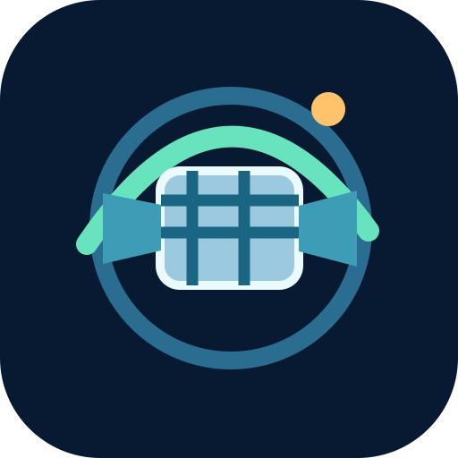

ORBITGUARDProtect the radiator.
Before dust arrives.
A landing warning gives a lunar robot time to reject heat, close its radiator cover, and minimize dust exposure.
⚙️ Mission scenarios
Why the protective cover matters
Closing the cover reduces the radiator's heat rejection in this simplified model but can help shield it from landing dust. Pre-Cool opens the radiator early, building thermal margin before the dusty interval.
📈 Baseline vs. Pre-Cool
Both controllers receive identical thermal inputs. Open-cover time during dust is a proxy for dust exposure, not a measured dust deposition rate.
Camera Lab
Photograph your CubeSat or lunar robot model, examine visible colors, and document components. Works with iPhone photo capture.
📷 Capture / upload prototype photo
Tap anywhere on the photo to measure its pixel color. This is genuine local image sampling; it is not AI component recognition.
Component field notes
Prototype Lab
Build and test the real moving cover with your own measured timing and temperature readings.
⏱️ Can your cover close before dust arrives?
The dust-arrival time is a scenario input; historical lunar landing observations do not establish dust-arrival time at your particular robot.
🌡️ Real temperature measurements
Enter thermometer readings from a tabletop demonstration. They are kept separate from the vacuum thermal simulation.
🔧 Hardware wiring plan
Engineering, not magic.
OrbitGuard Pre-Cool is a research-inspired lunar radiator dust-protection simulation and physical prototype companion.
How it works
The controller uses a landing warning to expose a radiator for pre-cooling before a dust event. It then closes the cover to reduce exposure, while a thermal override can reopen it to protect electronics if temperature rises too high.
Thermal equation
C × dT/dt = Qin − εσA(T⁴ − Tspace⁴)
Single-node energy balance; C = 1800 J/K; radiator area A = 0.06 m²; effective open/closed emissivity = 0.80 / 0.18. Temperatures in radiation calculations use kelvin; Euler solver step = 10 seconds. These are illustrative assumptions, not validated spacecraft flight parameters.
What is real vs. simulated?
The timeline, temperatures, thermal warnings, and dust exposure estimates are model outputs. iPhone photo capture, color sampling, local measurement storage, and CSV export work on-device. Image component recognition, autonomous mission AI, real spacecraft connectivity, and sensor streaming have not been integrated.
Limitations
The thermal system uses one temperature node and idealized cover emissivity. Dust exposure is estimated as minutes with the cover open during the dust interval, not actual deposited dust. This is neither a lunar environmental simulator nor flight-qualified software. Tabletop tests in air cannot validate vacuum heat transfer.
Research inspiration: NASA NTRS radiator-cover research (2026). This student project is not NASA endorsed or certified.
About the project
Created for Hack The Nest 2026 by Mohimanti Misson, Mechanical Engineering, Eastern Michigan University.
Version 1.0 • offline-capable once first loaded on HTTPS • simulation and demo software